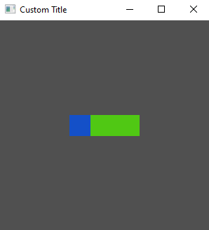

Creating a Tuix Application
The most basic tuix app looks like this:
use tuix::*;
fn main() {
let mut app = Application::new(|state, window| {});
app.run();
}
Currently the closure passed to new() is empty, but this is where we will build our application.
Running this code with cargo run will produce an empty gray window with a width of 800 pixels and a height of 600 pixels. This isn't very interesting, so in the next section we'll cover changing window properties like size, title and icon.
For now let's go over the two arguments provided by the closure:
-
state- This is a mutable reference to the UIState, which represents the 'global' data of the widgets in a gui application, such as layout and style. A mutable reference to state is passed around when building widgets, handling events, and drawing widgets. -
window- This is a mutable reference to aWindowBuilder. With this we can modify the window properties.
Setting Window Properties
Window properties can be set using the WindowBuilder, which is the second argument of the closure passed to Application::new().
fn main() {
let app = Application::new(|state, window|{
window.set_title("Custom Title");
})
}
Setting properties can also be chained together:
fn main() {
let app = Application::new(|state, window|{
window.set_title("Custom Title").set_inner_size(400,300);
})
}
List of Window Properties
Window Title
Sets the title of the window.
set_title(title: &str)
Window Inner Size
Sets the inner size of the window.
set_inner_size(width: u32, height: u32)
Window Inner Size
Sets the minimum inner size of the window.
set_min_inner_size(width: u32, height: u32)
Window Icon
Sets the window icon.
set_icon(&mut self, icon: Vec<u8>, width: u32, height: u32)
The icon must first be loaded using the image crate. Example:
let icon = image::open("resources/icons/calculator_dark-128.png").unwrap();
window.set_icon(icon.to_bytes(), icon.width(), icon.height());
Adding a Widget
We can add a simple widget to our application like so:
use tuix::*;
fn main() {
let app = Application::new(|state, window| {
window.set_title("Custom Title").set_inner_size(300,300);
// Add an Element widget
Element::new().build(state, window.entity(), |builder| builder);
});
app.run();
}
An Element widget is the simplest built-in widget that tuix has. It contains no data or event handling logic but can be styled like any other widget.
To add the element widget we first create a new instance with Element::new(), and then build the widget into the app with .build(state, window.entity(), |builder| builder).
-
The first argument,
state, is a mutable reference toStatefrom the application closure. -
The second argument is the entity id of the parent widget, in this case the window widget, which we get by calling
window.entity(). Each widget has anEntityid which can be used to get and set various widget properties stored inState. -
The third argument is a closure which provides us with a builder we can use to set properties of the newly created widget.
However, if you build and run this code you will still see an empty window.

This is because the Element widget has no built-in styling. To see the element, we can add a width, height, and background color using the builder:
use tuix::*;
fn main() {
let app = Application::new(|state, window| {
window.set_title("Custom Title").set_inner_size(300,300);
Element::new().build(state, window.entity(), |builder|
builder
.set_width(Units::Pixels(100.0))
.set_height(Units::Pixels(30.0))
.set_background_color(Color::rgb(200,80,20))
);
});
app.run();
}
This will produce a nice orange widget in the top left corner of the window with a width of 100 pixels and a height of 30 pixels. In the next section we will look at how to compose widgets together by adding a button to our element widget.
Composing Widgets
To demonstrate the composition of widgets, let's add a Button widget to the Element widget we have from before:
use tuix::*;
fn main() {
let app = Application::new(|state, window| {
window.set_title("Custom Title").set_inner_size(300,300);
let container = Element::new().build(state, window.entity(), |builder|
builder
.set_width(Pixels(100.0))
.set_height(Pixels(30.0))
.set_background_color(Color::rgb(200,80,20))
);
// Add a Button widget as a child of the Element widget
Button::new().build(state, container, |builder|
builder
.set_width(Pixels(30.0))
.set_height(Pixels(30.0))
.set_background_color(Color::rgb(20,80,200))
);
});
app.run();
}
Building the button widget works in the same way as the element widget. However, notice that the building of the element is now bound to a container variable. This is the Entity id of the element widget and is returned by the .build(...) function.
This id is then used to specify the element widget as the parent of the button widget in the button's .build(...) function. The button widget style properties are also different to the element widget to help distinguish them.
Running this code produces:

Composing widgets forms a tree, where each widget has a single parent and zero or more children. In tuix this tree is called the Hierarchy, and can be found in State. This hierarchy is used to propagate events as well as to draw the elements in the correct order.
We will cover the Hierarchy in more detail when we start to handle events and custom drawing a little later. In the next section we'll cover the basics of widget layout.
Widget Layout
Tuix uses the layout properties defined on widgets to position them within the window and to determine their size.
To keep the quick start guide short, we will skip over the details of tuix's layout system. The layout system in tuix is quite comprehensive, and a more detailed guide can be found in the layout section.
Now, so far we have defined a width and a height for our widgets so now we will position them. The following example positions the element in the center of the window:
use tuix::*;
fn main() {
let app = Application::new(|state, window| {
window.set_title("Custom Title").set_inner_size(300,300);
let container = Element::new().build(state, window.entity(), |builder|
builder
.set_width(Units::Pixels(100.0))
.set_height(Units::Pixels(30.0))
// Add stretch spacing to all sides of the element
.set_space_left(Stretch(1.0))
.set_space_right(Stretch(1.0))
.set_space_top(Stretch(1.0))
.set_space_bottom(Stretch(1.0))
.set_background_color(Color::rgb(200,80,20))
);
Button::new().build(state, container, |builder|
builder
.set_width(Pixels(30.0))
.set_height(Pixels(30.0))
.set_background_color(Color::rgb(20,80,200))
);
});
app.run();
}

We add space to each side of the element with units of Stretch(1.0). Note, we could have also used set_space() to apply the same spacing to all sides. Looking at the horizontal axis, because both left and right are set to stretch, the layout algorithm splits the free space between them, resulting in equal space either side of the element. The same is done for the verical axis, resulting in a centered element.
Notice also that the button has moved, remaining in the top left corner of the element. This is because widgets are positioned relative to their parents.
Widget Styling
As with layout, this quick start guide does not aim to cover all of the intricacies of styling and the properties available. A more comprehensive guide can be found in the styling section.
Inline and Shared Styling
So far we have defined our style properties directly on the widgets using the builder, also known as inline styling. Tuix also offers the ability to define style rules to allow shared styling between multiple widgets. The widgets affected by these shared style rules are determined by selectors which should be familiar to web developers using css and work in the same way.
The following code defines a style rule which acts on any widgets with a class name of "my_class", and also gives this class name to our two widgets:
use tuix::*;
fn main() {
let app = Application::new(|state, window| {
window.set_title("Custom Title").set_inner_size(300,300);
// Create a shared style wich applies to all widgets with class name "my_class"
let style_rule: StyleRule = StyleRule::new()
.selector(Selector::new().class("my_class"))
.set_height(Pixels(30.0))
.set_background_color(Color::rgb(80,200,20));
// Add the shared style rule to state
state.add_style_rule(style_rule);
let container = Element::new().build(state, window.entity(), |builder|
builder
.set_width(Pixels(100.0))
.set_space_left(Stretch(1.0))
.set_space_right(Stretch(1.0))
.set_space_top(Stretch(1.0))
.set_space_bottom(Stretch(1.0))
.set_background_color(Color::rgb(20,80,200))
// Add a class name "my_class"
.class("my_class")
);
Button::new().build(state, container, |builder|
builder
.set_width(Pixels(30.0))
// Add a class name "my_class"
.class("my_class")
);
});
app.run();
}
Note that the style rule has to be added to the app using state.add_style_rule(). Note also that inline properties override shared properties, so although both widgets are affected by the shared style, the button keeps its blue color as it comes from an inline style rule. The height property, on the other hand, is shared between the two widgets. Below is the output of this code:

Handling Events
Overview (Stack)
An overview of the layout system for working with stacks, in which child elements are positioned one after another.
- For stacking, a parent element arranges its children into a vertical stack (
layout-type: column) or a horizontal stack (layout-type: row).

- A child element can be positioned by adding space to the
left,right,top, orbottomof an element.

- A child element is positioned relative to its stack position (
position-type: parent-directed), or relative to the top-left of its parent (position-type: self-directed).
- Spacing can be expressed in pixels, percentage, stretch, or auto (see 8). Stretch causes the spacing to be flexible, occupying a proportion of the remaining free space. By default, spacing is set to auto.
- The size of an element is determined by its
widthandheight, which can also be expressed in pixels, percentage, stretch and auto. By default, size is set to stretch.
- When size is set to auto, an element will 'hug' its children in that axis. This is also true for
min-width/min-height(see 10).
- A parent can add space around its stacked children with
child-space, or specified individually withchild-left,child-right,child-top,child-bottom, or add space between its child elements withchild-between.
- Child spacing applies to elements with spacing set to auto.

- Spacing set in pixels, percentage, or stretch overrides child spacing.

- All spacing and size properties have corresponding minimum and maximum constraint properties. For example, for
leftthere ismin-leftandmax-left. By default spacing and size minimums and maximums are set to auto. This will cause elements tohugtheir children if the size if flexible and goes below the minimum.
Child Properies (TODO)
Position Type
This determines how an element will be positioned within its parent relative to other child elements.
- self-directed - The element determines its own position, relative to the top-left corner of the parent, and is not affected by other elements in a stack or grid.
- parent-directed (default) - The element is positioned by the parent into a stack or grid.
Spacing
There are four spacing properties that are used to specify the position an element within its parent:
- left - determines the space to the left of an element.
- right - determines the space to the right of an element.
- top - determines the space above an element.
- bottom - determines the space below an element.
The spacing properties behave somewhat like margins, adding space around an element.
Size
The size of an element is determined by two properties:
- width - determines the width of an element.
- height - determines the height of an element.
Like with all spacing and size properties, the value can be expressed in pixels, percentage, stretch, and auto.
Pixels
Parent Properies (TODO)
Layout Type
Rust
enum LayoutType {
Row,
Column,
Grid,
}
Stylesheet:
.container {
layout-type: row | column | grid;
}
This determines how the child elements should be arranged in the parent.
- Row - Child elements are arranged into a horizontal stack from left to right
- Column - Child elements are arranged into a vertical stack from top to bottom
- Grid - Child elements are arranged into a grid (link here)
Child-Space
This determines the spacing around the elements in a stack (does not apply to grid).
Each of the child spacing properties (see below), defined on the parent, acts to override the auto-spaced properties of the child elements. For example, the parent child-left property will override the left property of a child element if the left property is set to Units::Auto.
There are five child-space properties:
- child-left - determines the space to the left of the stack. Applies to the first element in a horizontal stack and all elements in a vertical stack.
- child-right - determines the space to the right of the stack. Applies to the last element in a horizontal stack and all elements in a vertical stack.
- child-top - determines the space to the top of the stack. Applies to the first element in a vertical stack and all elements in a horizontal stack.
- child-bottom - determines the space to the top of the stack. Applies to the last element in a vertical stack and all elements in a horizontal stack.
- child-between - determines the space between elements on the main axis. Applies to all elements except the first and last and acts to override child
leftandrightspacing.
With these child spacing properties it is possible to do a number of alignment configurations:
Align Left
.container {
child-left: 0px;
child-right: 1s;
}
Align Center
.container {
child-left: 1s;
child-right: 1s;
}
Align Right
.container {
child-left: 1s;
child-right: 0px;
}
Align Top
.container {
child-top: 0px;
child-bottom: 1s;
}
Align Middle
.container {
child-top: 1s;
child-bottom: 1s;
}
Align Bottom
.container {
child-top: 1s;
child-bottom: 0px;
}
Space Between
.container {
child-between: 1s;
}
Space Evenly (Row)
.container {
child-left: 1s;
child-right: 1s;
child-between: 1s;
}